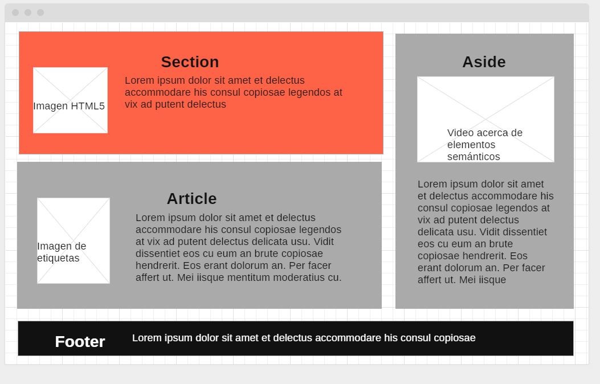

Objetivo General:
Brindar conocimientos acerca de las etiquetas de elementos semánticos dentro de un sitio web HTML.Objetivos Específicos:
- Definir que es una etiqueta ( SECTION, ASIDE, FOOTER, ARTICLE)
- Mostrar como se usan las etiquetas ( SECTION, ASIDE, FOOTER, ARTICLE) por medio de ejemplos dentro de un sitio web HTML5
Materiales:
Estos son los materiales que se utilzaran dentro del sitio web:Imagenes:


Videos:
Mockup:

Textos de Contenido:
Etiqueta Section
Esta etiqueta es utilizada para agrupar la temáticas del contenido del sitio web , por lo general se les agrega un encabezado
Etiqueta Article
Esta etiqueta se usa para agrupar el contenido de la página que hace parte de una unidad desde el punto de vista temático, el articulo se puede publicar y leer como un documento independiente , puede estar relacionada con el tema o no.
Etiqueta Aside
Esta etiqueta se usa para agrupar contenido secundario y relacionado al contenido que lo acompaña, normalmente se ubica a los lados del documento la etiqueta puede estar incluida en el body y se interpreta como contenido secundario con respecto a la pagina , tambien se puede agregar a la estiqueta section y article como contenido secundario perteneciente a estos.
Etiqueta Footer
Esta etiqueta se usa para contener información general del documento , información general que se suele poner al final de un documento como autor, direcciones de contacto, licencia y condiciones de uso.Referencias Bibliograficas:
- Elementos Semánticos de W3schools https://www.w3schools.com/html/html5_semantic_elements.asp
- Secciones HTML de https://www.mclibre.org/consultar/htmlcss/html/html-secciones.html 28 de septiembre 2019